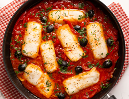

Recetas
Recetas
 Pollo
Pollo
 Pescado
Pescado
 Atun
Atun
 Veganas
Veganas
 Vegetarianas
Vegetarianas
 Quinoa
Quinoa

Pescado con salsa de tomate y aceitunas
Un plato mediterráneo delicioso donde el pescado se cocina en una salsa de tomate fresca con aceitunas y alcaparras. Es sabroso y lleno de sabor.
Dificultad
Dificil

Personas
4

TOTAL
40MIN
Ingredientes:
- ● 4 filetes de pescado (salmón, merluza o atún)
- ● 1 lata de tomates triturados (400 g)
- ● 1/4 taza de aceitunas verdes o negras, picadas
- ● 1 cucharada de alcaparras (opcional)
- ● 1 diente de ajo, picado
- ● 1 cucharadita de orégano seco
- ● 2 cucharadas de aceite de oliva
- ● Sal y pimienta al gusto
- ● Hojas de albahaca o perejil para decorar
Información nutricional (aproximada por porción):
- ● Calorías: 400 kcal
- ● Proteínas: 35 g
- ● Grasas: 22 g
- ● Carbohidratos: 15 g
- ● Fibra: 4 g
A cocinar:
- 1. En una sartén grande, calienta el aceite de oliva y sofríe el ajo durante 1-2 minutos hasta que esté dorado.
- 2. Agrega los tomates triturados, las aceitunas, las alcaparras y el orégano. Cocina a fuego lento durante 10 minutos, hasta que la salsa se espese un poco.
- 3. Coloca los filetes de pescado en la sartén con la salsa. Cocina durante 8-10 minutos, o hasta que el pescado esté cocido y se deshaga fácilmente con un tenedor.
- 4. Sirve el pescado con la salsa por encima, y decora con hojas de albahaca o perejil.